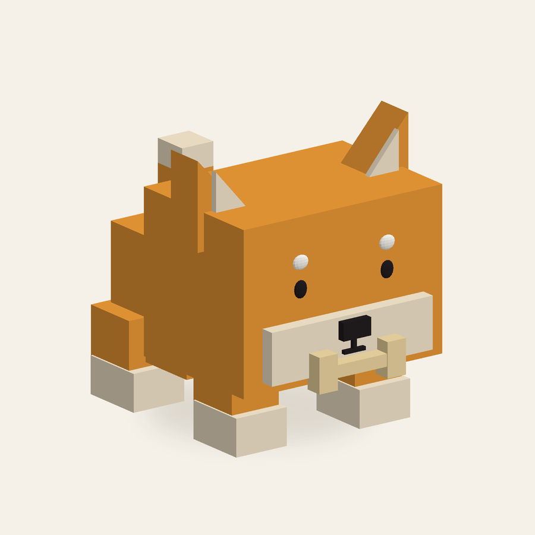
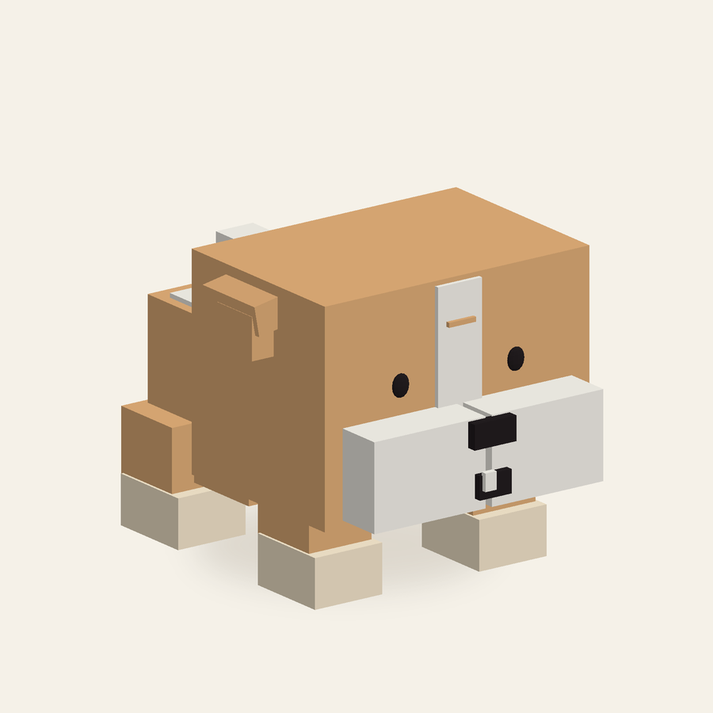
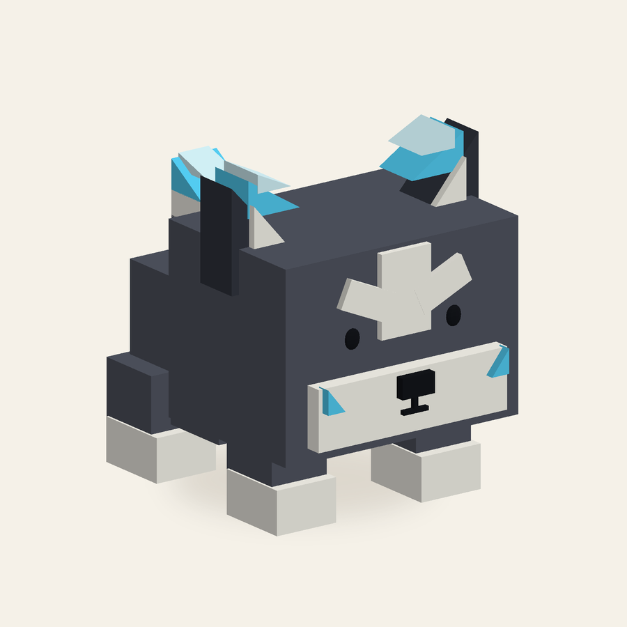
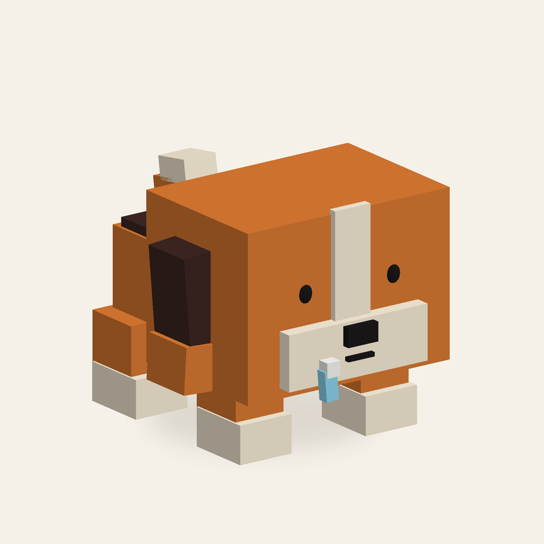
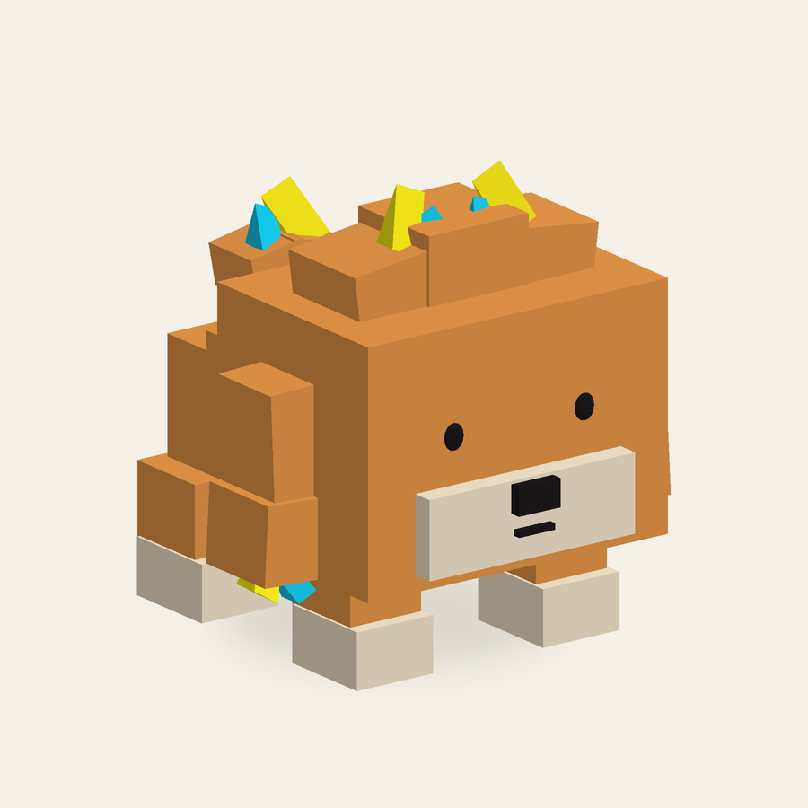
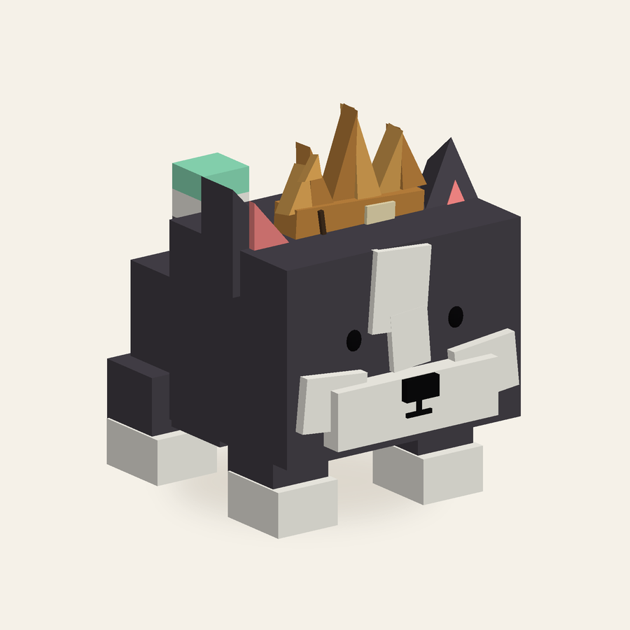

D01 / BLOCK DOG
시바견
작은 흰 눈썹 · 네모 뼈

뼈다귀 뱉기
입에 문 작은 뼈를 앞으로 퉤! 뱉어요.
큰 머리와 짧은 몸, 작은 점눈.
생김새는 단순하게, 성격은 확실하게.
작은 흰 눈썹 · 네모 뼈

뼈다귀 뱉기
입에 문 작은 뼈를 앞으로 퉤! 뱉어요.
빵빵한 네모 볼 · 삐죽한 이빨

압축 공기탄
양 볼에 공기를 모은 뒤 입으로 공기 충격탄을 뿜어요.
회백색 얼굴 마스크 · 양쪽 귀 끝 얼음 결정

냉기 숨결
입 앞에서 차가운 숨결을 곧게 내뿜어요.
갈색 늘어진 귀 · 짧은 파란 침방울

침방울 튕기기
입가의 작은 침방울을 앞으로 톡! 튕겨요.
네모 털뭉치 · 노랑·하늘 전기털

정전기 찌릿
머리와 귀 끝의 전기털로 짧게 찌릿! 방전해요.
한쪽 접힌 귀 · 낡은 골판지 왕관

응원 짖기
입 앞에서 힘차게 짖어 아군을 응원해요.
Workspace → 우클릭 → Insert From File…에서 .rbxmx 파일을 선택하세요. 위의 ‘6종 한 번에 넣기’는 모든 강아지를 3 × 2로 배치한 파일입니다. 개별 강아지 파일도 각각 들어 있어요.
현재는 대기 자세 모델입니다. 공격 설명은 캐릭터 설정이며, 공격 애니메이션·피해 판정은 포함하지 않았습니다. 파일 구조와 실제 모델 렌더를 확인했으며 Roblox Studio 내 가져오기는 미검증입니다.